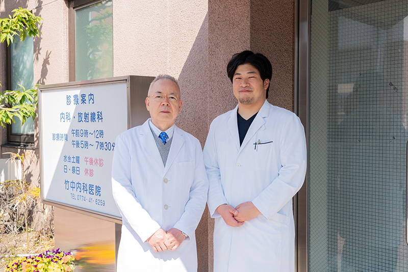
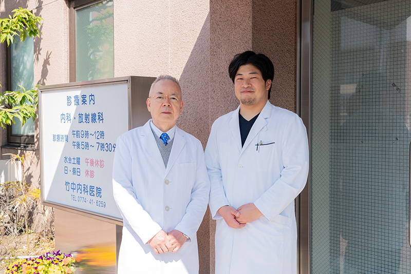

事前連絡のお願い
感染症対策の観点から、発熱、咳などの症状がある場合には、お手数ですが、必ずお電話にて事前にご連絡ください。
マスク着用のお願い
当院には高齢者などの重症化リスクの高い方も多く受診されています。
来院者、家族や職員を院内感染から守るためにも、当院内ではマスクの着用をお願いしておりますので、来院の際はご持参をお願いいたします。
ご理解、ご了承の程何卒宜しくお願い致します。
身近なかかりつけ医として
生活習慣病に特化した腎臓内科医として
内科全般について診療します
近鉄京都線
大久保駅
徒歩２分
大切な日々を安心して過ごしていただけるよう
丁寧な診療を心がけています
INFORMATION
 お知らせ
お知らせ
- 2025.03.31
- 竹中内科医院はかわむら内科クリニックに生まれ変わりました。
〒611-0031 宇治市広野町西裏99
近鉄京都線 大久保駅 徒歩2分
西側とクリニック裏に駐車場有
| 診療時間 | 月 | 火 | 水 | 木 | 金 | 土 | 日 |
|---|---|---|---|---|---|---|---|
| 09:00 - 12:00 | ─ | ||||||
| 17:00 - 19:30 | ─ | ─ | ─ |
 川村担当、一般内科・腎臓内科
川村担当、一般内科・腎臓内科 岩本担当、一般内科・腎臓内科
岩本担当、一般内科・腎臓内科 竹中担当、一般内科
竹中担当、一般内科
TREATMENTS
診療内容


 
